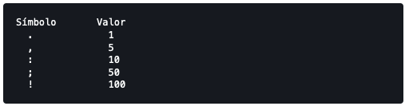
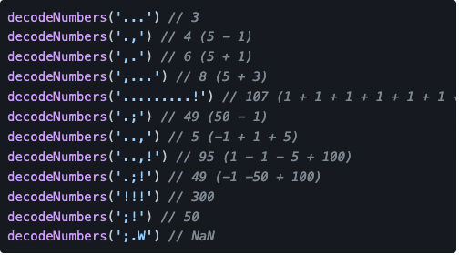

Solucion reto en linea
reto tomado de https://adventjs.dev/challenges/16
Lara Eloft ha encontrado unos restos élficos en una cueva, cerca del Círculo Polar Ártico, a 8 km al norte de Rovaniemi.
Ahora se encuentra descifrando unas misteriosas cartas que contiene información sobre unos números que le puede hacer llegar al próximo objetivo.
Lara tiene un documento que contiene una serie de números que pueden ser usados para descifrarlos:

Tenemos que crear una función que nos pasa una cadena de texto con símbolos y tenemos que transformarlo al número correcto. ¡Ojo! Si encuentras un símbolo que no entendemos, mejor que devolvamos un NaN:
